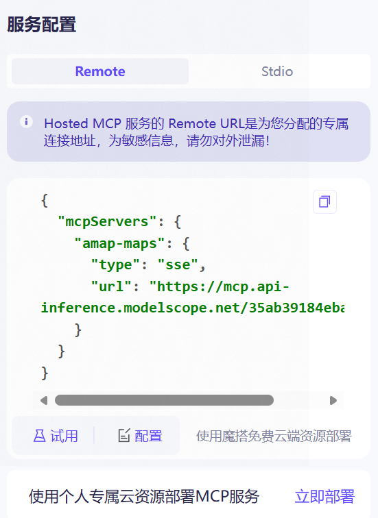
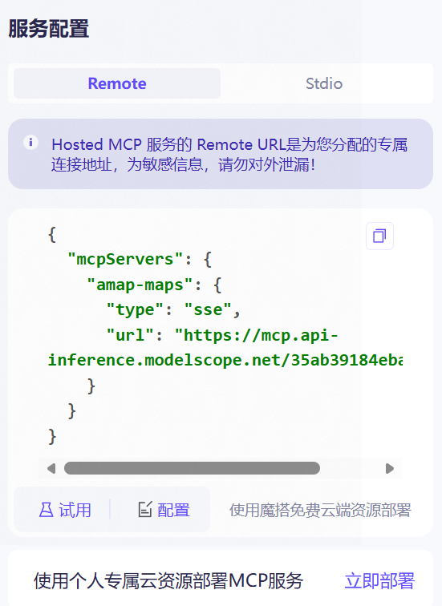

05. 未来的标准：MCP (Model Context Protocol) 简介¶
🔌 本节目标：从“手搓线缆”到“USB 即插即用”
在第四节中，为了让 AI 查一个书价，我们写了整整 50 行代码来定义 JSON Schema、解析参数、回传结果。 在第五节中，需要定义一个Tool Calling 来对接AI完成查书的功能。
试想一下：如果你想把你的 MySQL 数据库、本地日志文件、Home Lab 里的 NAS 全部开放给 AI，难道要为每一个服务都手写一遍 Tool Calling 代码吗？
MCP (Model Context Protocol) 的出现，就是为了解决这个“连接噩梦”。它是 AI 时代的 USB 协议。本节我们将使用 Spring AI 最新的 MCP Client Starter，演示如何一行代码不写，给 AI 装上“高德地图”。
🕸️ 第一部分：为什么我们需要 MCP？¶
现状：巴别塔的混乱¶
目前，每家 AI 厂商的连接方式都不一样：
- OpenAI 有自己的 Assistants API。
- Claude 有自己的 Tool Use 格式。
- LangChain 有自己的封装。
如果你写了一个 Java 方法 queryStudentInfo()，你想让 Cursor 编辑器能用它，想让 Claude Desktop 能用它，又想让自己的 Web 官网能用它，你需要写三套适配代码。这就是数据孤岛。
解决方案：MCP 协议¶
MCP (Model Context Protocol) 是一个开放标准。它规定了：
1. AI 应该怎么问（标准化的请求格式）。
2. 程序应该怎么答（标准化的资源、提示词和工具格式）。
一句话总结：只要你的 Java 程序支持 MCP 标准，它就可以被任何支持 MCP 的 AI 客户端直接连接，无需改代码！
🏗️ 第二部分：核心架构三剑客¶
MCP 的架构非常像我们熟悉的 C/S (客户端/服务端) 模式：
| 角色 | 比喻 | 职责 | 本案例中的对应 |
|---|---|---|---|
| MCP Host | 电脑主机 | 运行 AI 模型的主程序。 | 你的 Spring Boot 应用 |
| MCP Client | USB 接口 | Host 内部的连接器。 | Spring AI MCP Starter |
| MCP Server | U 盘 / 鼠标 | 提供数据和工具能力。 | 高德地图 MCP 服务 (云端) |
graph LR
subgraph Host [你的 Spring Boot 应用]
A[AiController] --> B[MCP Client ]
end
subgraph Server [ 云端服务]
C[高德地图 MCP Server]
end
subgraph AMap [高德开放平台]
D[API 接口]
end
B -- "SSE (HTTP流式协议)" --> C
C -- "调用 API" --> D
🚀 第三部分：实战 - 给 AI 装上“高德地图”¶
以前我们要让 AI 具备查询路线的能力，需要在 Java 代码里写一堆 HTTP 请求去对接高德 API。 现在，利用 Spring AI MCP Client，我们只需要做配置，不需要写任何工具定义代码。
步骤 1：部署 MCP Server (服务端)¶
我们在 ModelScope (魔搭) 平台上，使用现成的高德 MCP Server。
- 访问 ModelScope 的MCP专区： https://www.modelscope.cn/mcp，找到高德地图的MCP。
- 选择
Remote, 传输类型选择SSE, 填入AMAP_MAPS_API_KEY(你申请的高德 API_Key)。 
 - 点击连接，获得一个 SSE URL (例如：
https://mcp.api-inference.modelscope.net/35ab39184eba47/sse)。
注：这个 Server 是别人写好的，符合 MCP 标准，我们直接连就行！
部署完成后，你会获得一个 SSE URL。 当我们将这个 URL 填入 MCP Client (如 Cherry Studio 或我们的 Java 程序) 后，AI 瞬间就学会了以下技能：
amap_weather_info: 查询天气。amap_search_places: 搜索地点（找美食、找加油站）。amap_direction_driving: 规划驾车路线。
步骤 2：引入 Maven 依赖¶
在 pom.xml 中引入 Spring AI 的 MCP 客户端启动器：
步骤 3：配置 application.properties¶
这是最神奇的一步。我们不需要写 Java 代码来注册工具，只需要在配置文件中告诉 Spring Boot 去哪里连接 MCP Server。
步骤 4：编写 Controller¶
在 AiController 中，我们像往常一样使用 ChatClient。Spring AI 会自动扫描配置好的 MCP Server，发现里面的工具（查天气、搜地点等），并自动挂载到 ChatClient 上。
这个案例说明了什么？¶
- 即插即用：高德地图官方（或社区）写好了一次 MCP Server，全世界的 AI 都能直接用，不需要每个开发者重复造轮子。
- 云端与本地的连接：你的 Java 程序运行在本地，高德 MCP 运行在云端 (ModelScope)，两者通过 MCP 协议无缝协作。
☁️ 第四部分：见证魔法¶
注意看，我们不需要告诉 AI “高德地图的 API 文档是什么”，也不需要定义 Schema。连接成功后，直接问： 启动 Spring Boot 应用，访问你的接口：
请求 URL：
http://localhost:8080/ai/chat?message=我在武汉工商学院，想去最近的茶颜悦色喝奶茶，开车要多久？
后台发生的真实交互 (Logs)：
- Spring Boot (Client) 连接到 ModelScope (Server)。
- Client 询问：“你有哪些本事？” Server 回答：“我会
amap_search_places和amap_direction_driving”。 - AI (大模型) 思考后决定调用工具。
- Client 发送指令给 Server：
execute amap_search_places("茶颜悦色", "武汉")。 - Server 返回：“最近的是白沙洲店...”。
- Client 再次发送指令：
execute amap_direction_driving(...)。 - Server 返回：“耗时 15 分钟”。
浏览器响应：
"帮你查到了，距离武汉工商学院最近的茶颜悦色是白沙洲店，大约 3.5 公里。目前路况通畅，开车大约需要 15 分钟。"
🆚 总结：Tool Calling vs MCP¶
| 特性 | Tool Calling | MCP |
|---|---|---|
| 连接方式 | 硬编码 (Hardcoded) | 标准化协议 (Standard Protocol) |
| 代码量 | 50+ 行 (定义 Request, Response, Function) | 0 行 (仅配置) |
| 发现机制 | 手动告诉 AI 有哪些工具 | AI 自动询问 Server 有哪些能力 |
| 复用性 | 低 (只能当前项目用) | 极高 (任何支持 MCP 的 AI 都能连) |
| 维护成本 | 高 (高德 API 变了你要改代码) | 低 (服务端升级，客户端无感) |
| 模式 | 本地硬编码 | 远程即插即用 |
总结： MCP 的价值
标准化: 你不再需要为每个外部工具写特定的 Java 代码 (Function
解耦: 实际的工具逻辑（Python, TS, Go）与 Spring AI 应用逻辑分离。
生态复用: 你可以直接连接社区现有的 MCP Server（如 Google Drive, Slack, Postgres），而无需重新造轮子。
🔮 展望¶
MCP 是 AI 应用开发的下一个里程碑。
在未来的 Agent 开发 中，你将不再是一个“写接口的人”，而是一个“连接者”，而是一个“为 AI 构建感知器官（Context）和执行器官（Tools）的造物主”。你只需要在配置文件里填入各种 MCP Server 的地址（数据库 MCP、文件系统 MCP、微信 MCP...），你的 AI 就瞬间拥有了三头六臂。
第五章通关
恭喜你完成了 《Java 与 AI 的握手》 这一章！
- 你学会了把 Java 当浏览器用 (Http Client)。
- 你学会了用 Java 管理提示词 (Prompt)。
- 你学会了让 AI 说人话 (JSON Parsing)。
- 你甚至赋予了 AI 双手 (Tool Calling)。
- 你还了解了未来的标准 (MCP)。